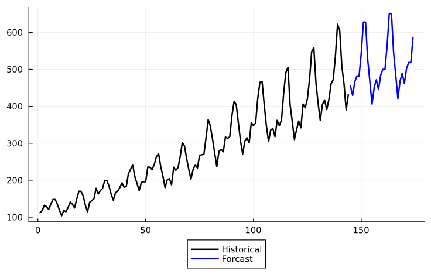
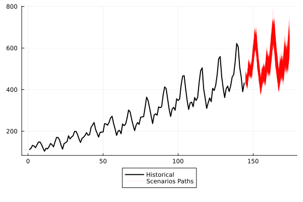
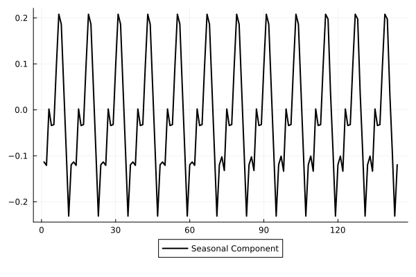
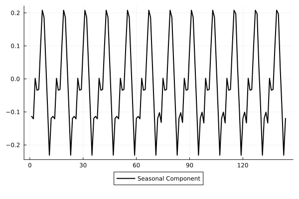

StateSpaceLearning
StateSpaceLearning.jl is a package for modeling and forecasting time series in a high-dimension regression framework.
Quickstart
using StateSpaceLearning
y = randn(100)
#Fit Model
output = StateSpaceLearning.fit_model(y)
#Main output options
model_input = output.model_input # Model inputs that were utilized to build the regression matrix.
Create_X = output.Create_X # The function utilized to build the regression matrix.
X = output.X # High Dimension Regression utilized in the estimation.
coefs = output.coefs # High Dimension Regression coefficients estimated in the estimation.
ε = output.ε # Residuals of the model.
fitted = output.fitted # Fit in Sample of the model.
components = output.components # Dictionary containing information about each component of the model, each component has the keys: "Values" (The value of the component in each timestamp) , "Coefs" (The coefficients estimated for each element of the component) and "Indexes" (The indexes of the elements of the component in the high dimension regression "X").
residuals_variances = output.residuals_variances # Dictionary containing the estimated variances for the innovations components (that is the information that can be utilized to initialize the state space model).
valid_indexes = output.valid_indexes # Vector containing valid indexes of the time series (non valid indexes represent NaN values in the time series).
#Forecast
prediction = StateSpaceLearning.forecast(output, 12) #Gets a 12 steps ahead prediction
Fit Arguments
y::Vector{Fl}: Vector of data.model_input::Dict: Dictionary containing the model input parameters (default: Dict("level" => true, "stochastic_level" => true, "trend" => true, "stochastic_trend" => true, "seasonal" => true, "stochastic_seasonal" => true, "freq_seasonal" => 12, "outlier" => true, , "ζ_ω_threshold" => 12)).model_functions::Dict: Dictionary containing the model functions (default: Dict("create_X" => create_X, "get_components_indexes" => get_components_indexes, "get_variances" => get_variances)).estimation_input::Dict: Dictionary containing the estimation input parameters (default: Dict("α" => 0.1, "information_criteria" => "aic", ψ => 0.05, "penalize_exogenous" => true, "penalize_initial_states" => true)).estimation_function::Function: Estimation function (default: default_estimation_procedure).Exogenous_X::Union{Matrix{Fl}, Missing}: Exogenous variables matrix (default: missing).
Features
Current features include:
- Estimation
- Components decomposition
- Forecasting
- Completion of missing values
- Predefined models, including:
- Outlier detection
- Outlier robust models
Quick Examples
Fitting, forecasting and simulating
Quick example of fit and forecast for the air passengers time-series.
using CSV
using DataFrames
using Plots
airp = CSV.File(StateSpaceLearning.AIR_PASSENGERS) |> DataFrame
log_air_passengers = log.(airp.passengers)
steps_ahead = 30
output = StateSpaceLearning.fit_model(log_air_passengers)
prediction_log = StateSpaceLearning.forecast(output, steps_ahead) # arguments are the output of the fitted model and number of steps ahead the user wants to forecast
prediction = exp.(prediction_log)
plot(airp.passengers, w=2 , color = "Black", lab = "Historical", legend = :outerbottom)
plot!(vcat(ones(length(log_air_passengers)).*NaN, prediction), lab = "Forecast", w=2, color = "blue")
N_scenarios = 1000
simulation = StateSpaceLearning.simulate(output, steps_ahead, N_scenarios) # arguments are the output of the fitted model, number of steps ahead the user wants to forecast and number of scenario paths
plot(airp.passengers, w=2 , color = "Black", lab = "Historical", legend = :outerbottom)
for s in 1:N_scenarios-1
plot!(vcat(ones(length(log_air_passengers)).*NaN, exp.(simulation[:, s])), lab = "", α = 0.1 , color = "red")
end
plot!(vcat(ones(length(log_air_passengers)).*NaN, exp.(simulation[:, N_scenarios])), lab = "Scenarios Paths", α = 0.1 , color = "red")

Component Extraction
Quick example on how to perform component extraction in time series utilizing StateSpaceLearning.
using CSV
using DataFrames
using Plots
airp = CSV.File(StateSpaceLearning.AIR_PASSENGERS) |> DataFrame
log_air_passengers = log.(airp.passengers)
output = StateSpaceLearning.fit_model(log_air_passengers)
level = output.components["μ1"]["Values"] + output.components["ξ"]["Values"]
slope = output.components["ν1"]["Values"] + output.components["ζ"]["Values"]
seasonal = output.components["γ1"]["Values"] + output.components["ω"]["Values"]
trend = level + slope
plot(trend, w=2 , color = "Black", lab = "Trend Component", legend = :outerbottom)
plot(seasonal, w=2 , color = "Black", lab = "Seasonal Component", legend = :outerbottom)
 

Best Subset Selection
Quick example on how to perform best subset selection in time series utilizing StateSpaceLearning.
using StateSpaceLearning
using CSV
using DataFrames
using Random
Random.seed!(2024)
airp = CSV.File(StateSpaceLearning.AIR_PASSENGERS) |> DataFrame
log_air_passengers = log.(airp.passengers)
X = rand(length(log_air_passengers), 10) # Create 10 exogenous features
β = rand(3)
y = log_air_passengers + X[:, 1:3]*β # add to the log_air_passengers series a contribution from only 3 exogenous features.
output = StateSpaceLearning.fit_model(y; Exogenous_X = X, estimation_input = Dict("α" => 1.0, "information_criteria" => "bic", "ε" => 0.05, "penalize_exogenous" => true, "penalize_initial_states" => true))
Selected_exogenous = output.components["Exogenous_X"]["Selected"]
In this example, the selected exogenous features were 1, 2, 3, as expected.
Missing values imputation
Quick example of completion of missing values for the air passengers time-series (artificial NaN values are added to the original time-series).
using CSV
using DataFrames
using Plots
airp = CSV.File(StateSpaceLearning.AIR_PASSENGERS) |> DataFrame
log_air_passengers = log.(airp.passengers)
airpassengers = Float64.(airp.passengers)
log_air_passengers[60:72] .= NaN
output = StateSpaceLearning.fit_model(log_air_passengers)
fitted_completed_missing_values = ones(144).*NaN; fitted_completed_missing_values[60:72] = exp.(output.fitted[60:72])
real_removed_valued = ones(144).*NaN; real_removed_valued[60:72] = deepcopy(airp.passengers[60:72])
airpassengers[60:72] .= NaN
plot(airpassengers, w=2 , color = "Black", lab = "Historical", legend = :outerbottom)
plot!(real_removed_valued, lab = "Real Removed Values", w=2, color = "red")
plot!(fitted_completed_missing_values, lab = "Fit in Sample completed values", w=2, color = "blue")

Outlier Detection
Quick example of outlier detection for an altered air passengers time-series (artificial NaN values are added to the original time-series).
using CSV
using DataFrames
using Plots
airp = CSV.File(StateSpaceLearning.AIR_PASSENGERS) |> DataFrame
log_air_passengers = log.(airp.passengers)
log_air_passengers[60] = 10
log_air_passengers[30] = 1
log_air_passengers[100] = 2
output = StateSpaceLearning.fit_model(log_air_passengers)
detected_outliers = findall(i -> i != 0, output.components["o"]["Coefs"])
plot(log_air_passengers, w=2 , color = "Black", lab = "Historical", legend = :outerbottom)
scatter!([detected_outliers], log_air_passengers[detected_outliers], lab = "Detected Outliers")

StateSpaceModels initialization
Quick example on how to use StateSpaceLearning to initialize StateSpaceModels
using CSV
using DataFrames
using StateSpaceModels
airp = CSV.File(StateSpaceLearning.AIR_PASSENGERS) |> DataFrame
log_air_passengers = log.(airp.passengers)
output = StateSpaceLearning.fit_model(log_air_passengers)
residuals_variances = output.residuals_variances
model = BasicStructural(log_air_passengers, 12)
set_initial_hyperparameters!(model, Dict("sigma2_ε" => residuals_variances["ε"],
"sigma2_ξ" =>residuals_variances["ξ"],
"sigma2_ζ" =>residuals_variances["ζ"],
"sigma2_ω" =>residuals_variances["ω"]))
fit!(model)Paper Results Reproducibility
The paper has two experiments (results for the M4 competition and a simulation study). To reproduce each experiment follow the instructions below:
M4 Experiment
To reproduce M4 paper results you can clone the repository and run the following commands on terminal:
julia paper_tests/m4_test/m4_test.jl
python paper_tests/m4_test/m4_test.pyThe results for SSL model in terms of MASE and sMAPE for all 48000 series will be stored in folder "paper_tests/m4_test/results_SSL". The average results of MASE, sMAPE and OWA will be saved in file "paper_tests/m4_test/metric_results/SSL_METRICS_RESULTS.csv".
The results for SS model in terms of MASE and sMAPE for all 48000 series will be stored in folder "paper_tests/m4_test/results_SS". The average results of MASE, sMAPE and OWA will be saved in file "paper_tests/m4_test/metric_results/SS_METRICS_RESULTS.csv".
Simulation Experiment
To reproduce the simulation results you can clone the repository and run the following commands on terminal:
julia paper_tests/simulation_test/simulation.jl 0As this test takes a long time, you may want to run it in parallel, for that you can change the last argument to be number of workers to use in the parallelization:
julia paper_tests/simulation_test/simulation.jl 3The results will be saved in two separated files: "paper_tests/simulation_test/results_metrics/metrics_confusion_matrix.csv" and "paper_tests/simulation_test/results_metrics/metrics_bias_mse.csv"
Contributing
- PRs such as adding new models and fixing bugs are very welcome!
- For nontrivial changes, you'll probably want to first discuss the changes via issue.